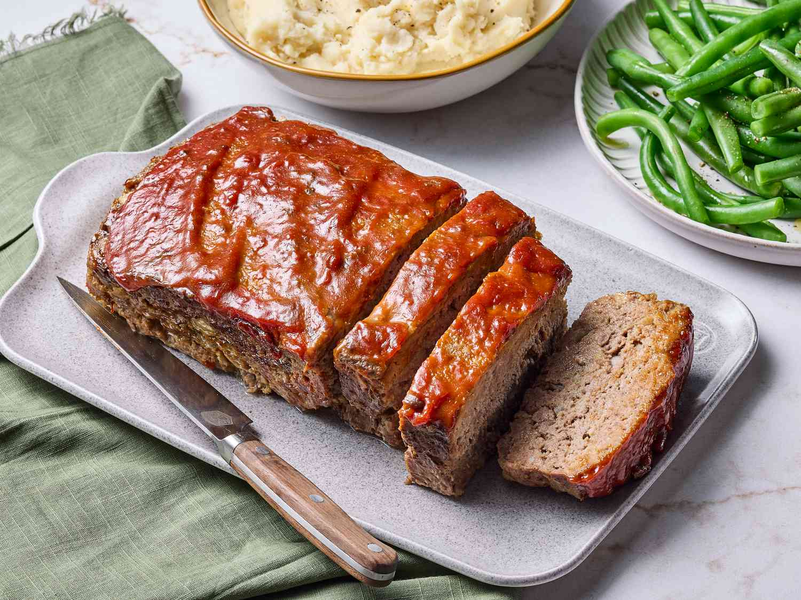

Meatloaf Recipe

Descripion
Meatloaf is a dish of ground meat that has been combined with other ingredients, formed into the shape of a loaf, then baked or smoked.
he final shape is either hand-formed on a baking tray or pan-formed by cooking it in a loaf pan.
Ingredients
ground beef
egg
onion
milk
bread crumbs
salt
pepper
Steps
- Mix the loaf ingredients, then transfer to a loaf pan.
- Mix the sauce ingredients, then pour over the loaf.
- Bake in the preheated oven until the meatloaf is no longer pink in the center.
Homepage